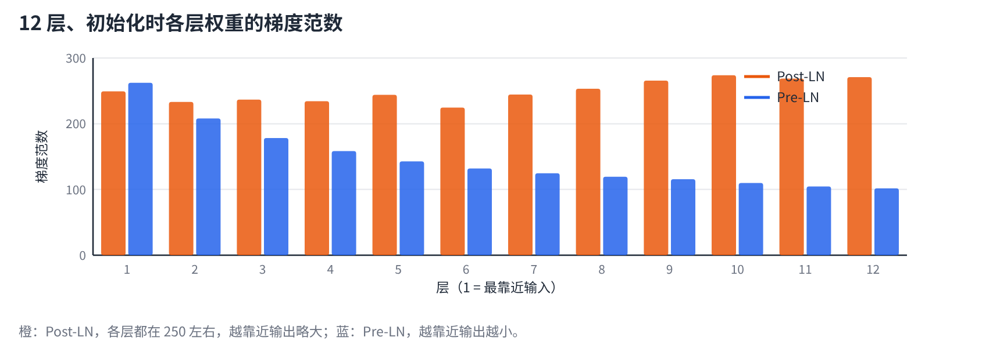
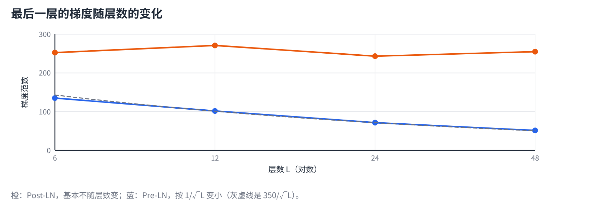

第 12 章 · Pre-LN：为什么 Post-LN 离不开 warmup，把 LayerNorm 挪个位置就好了
本地运行
git clone https://github.com/wikieden/beyond-transformer
cd beyond-transformer/code/notebooks
pip install jupyterlab torch numpy
jupyter lab ch12_pre_ln.ipynb也可以下载后直接用 VS Code 打开 .ipynb 运行。需要 GPU 的章节在 Colab 里选「代码执行程序 → 更改运行时类型 → GPU」。
本章回答：原版 Transformer 把 LayerNorm 放在残差相加之后（Post-LN），训练必须先用很小的学习率 warmup，不然就发散。为什么？把 LayerNorm 挪到子层前面（Pre-LN）改变了什么？“最后一层的梯度和层数无关”与“随 √L 变小”这两句话是什么意思？Pre-LN 又付出了什么代价？
讲解日期：2026-11-26 · 上一章：第 11 章 读原版源码 · 下一章：第 13 章 RMSNorm
对应原文：On Layer Normalization in the Transformer Architecturetransformer-deep-dive/materials/text/papers/preln-on-layer-normalization-2002.04745.txt摘要与引言 L17–L66（warmup 是 Post-LN 的必需品）、§3.3 L292 起、Theorem 1 L338–L357（最后一层梯度：Post-LN O(d√ln d)，Pre-LN O(d√(ln d / L))）；CS336 a1 handout §7.3 L2070–L2085（pre-norm 与 post-norm 的公式、pre_norm_ablation）；CS3362025 Lecture 3 - architecture.txt（各家 norm 的放法）
本章缩写：Post-LN = Post-LayerNorm（残差相加之后做 LayerNorm）；Pre-LN = Pre-LayerNorm（进子层之前做 LayerNorm）；L = 层数；d = 宽度；‖·‖_F = Frobenius 范数（矩阵所有元素平方和开根号）；O(·)（读作“大 O”：只看增长的量级）。全部缩写见 附录 · 缩写与术语表
讲解
第一步：两种放法（2026-11-26）
类比：一条流水线上的质检员。 Post-LN 的质检员站在每道工序之后，把“原料 + 这道工序加的东西”整体检查、重新整理；Pre-LN 的质检员站在每道工序之前，只整理送进工序的那份拷贝，主线上的原料原样往下流。
a1 §7.3（L2070–L2085）把两种写法并排写出来：
Pre-LN 的主干（残差流，第 10 章）从头到尾不经过 norm，所以最后要再补一个 norm 才接输出层（第 7 章 Algorithm 10 的行 10、第 11 章源码的 Encoder 末尾）。a1 说这是原版之后为数不多的“共识修改”之一。
一句话：Post-LN 在残差相加后 norm，主干每层都被整理；Pre-LN 只在进子层前 norm，主干原样往下传，最后补一个 norm。
第二步：初始化时的梯度：Post-LN 最后一层的梯度不随层数变小（2026-11-26）
Xiong 等人的 Theorem 1（L338–L357）：初始化时，最后一层 FFN 权重的梯度
Post-LN 的梯度和层数 L 无关；Pre-LN 的梯度随 √L 变小。
数字演示（一个 L 层的残差网络，子层是 d × d 的线性层，W ~ N(0, 1/d)，d = 64，loss 是到随机目标的平方误差；手写反向传播，用数值梯度核对过）：
各层 W 的梯度范数（12 层）：
| 层 | 1 | 4 | 7 | 10 | 12 |
|---|---|---|---|---|---|
| Post-LN | 249.2 | 234.4 | 244.3 | 273.8 | 270.9 |
| Pre-LN | 262.3 | 158.5 | 124.6 | 109.9 | 101.7 |
最后一层的梯度随层数 L：
| L | 6 | 12 | 24 | 48 |
|---|---|---|---|---|
| Post-LN | 252.3 | 270.9 | 243.1 | 254.9 |
| Pre-LN | 135.0 | 101.7 | 71.4 | 51.3 |
| Pre-LN × √L | 330.6 | 352.2 | 349.8 | 355.5 |
Post-LN 最后一层的梯度不管多深都在 250 左右；Pre-LN 乘上 √L 后基本是常数，正是 1/√L 的规律。

图 12-1 · 12 层、初始化时各层权重的梯度范数。橙：Post-LN，各层都在 250 左右，越靠近输出略大；蓝：Pre-LN，越靠近输出越小一句话：初始化时 Post-LN 靠近输出的那几层梯度很大、且不随层数减小；Pre-LN 的梯度随 1/√L 变小。
第三步：所以 Post-LN 要 warmup（2026-11-26）
梯度大，同样的学习率下一步就迈得大。Post-LN 靠近输出的层一开始就拿到很大的梯度，用正常的学习率直接训练，前几步就把参数推得很远，训练发散或卡住。原文的解释（引言 L30–L66）：warmup 用很小的学习率走过这一段，等参数离开初始化附近、梯度变得正常再放大。这也是第 4 章 warmup 的第三个理由。
Pre-LN 各层梯度更均匀、整体更小，不用 warmup 也能训，或者 warmup 短得多、学习率可以开得更大（原文的实验：去掉 warmup 后 Pre-LN 收敛得和带 warmup 的 Post-LN 一样好甚至更快）。

图 12-2 · 最后一层的梯度范数随层数 L（6、12、24、48）。橙：Post-LN，基本不变；蓝：Pre-LN，按 1/√L 变小（灰虚线是 350/√L）一句话：Post-LN 输出附近梯度大，必须先用小学习率 warmup；Pre-LN 梯度均匀，可以去掉或缩短 warmup。
第四步：Pre-LN 的代价和后来的变体（2026-11-26）
Pre-LN 也不是白给：
- 主干越加越大：每层只往主干上加东西、不整理，深层的残差流数值越来越大（第 11 章的动画），后面层的贡献在“总量”里占比越来越小。有人发现很深的 Pre-LN 模型，后面的层“没起多少作用”。
- 最后必须补一个 norm：否则输出层看到的数量级随深度变。
后来的做法：
| 变体 | 怎么放 | 谁在用 |
|---|---|---|
| Pre-LN | x + f(Norm(x)) | GPT-2 之后的绝大多数：LLaMA、Qwen、Mistral |
| 双 norm（sandwich） | x + Norm(f(Norm(x))) | Gemma 2、Grok 等 |
| “重排的 Post-norm” | x + Norm(f(x)) | OLMo 2（第 18 章） |
| DeepNorm | Norm(αx + f(x))，α > 1 | 想用 Post-LN 训很深的模型（第 20 章） |
共同点：主干上的那一路尽量不被 norm 打断，norm 放在子层的入口或出口。
场景代码：PyTorch 里两种块的写法（真实库调用；本书环境的 chapter-code 只用 NumPy，这段没跑过）：
class PreLNBlock(nn.Module):
def forward(self, x):
x = x + self.attn(self.norm1(x)) # 主干不过 norm
return x + self.mlp(self.norm2(x))
class PostLNBlock(nn.Module):
def forward(self, x):
x = self.norm1(x + self.attn(x)) # 每层输出都被 norm
return self.norm2(x + self.mlp(x))
把自己的 a1 模型改成 Post-LN 训一次（pre_norm_ablation），是 a1 §7.3 的题，也是里程碑 T-M4 的一部分。
一句话：Pre-LN 的代价是主干越加越大、最后要补 norm；现在的变体都在“norm 放子层两头、不打断主干”这个思路上。
动画演示：梯度从输出往回传，两种放法差在哪

可交互版：animations/12-pre-ln.html（下拉切换 Post-LN / Pre-LN；滑块调层数）。
怎么看：
- 每根柱子是一层权重的梯度范数（第二步）；
- Post-LN：柱子差不多一样高，层数加深也不变；
- Pre-LN：越靠近输出越矮；层数从 6 拉到 48，整体按 1/√L 变矮，右上角是最后一层的数值。
练习与作答记录
题 1（第一步）：写出 Post-LN 和 Pre-LN 下，一个只有注意力子层的块的公式。哪一种的主干 x 会被 norm？
题 2（第二步）：Pre-LN 的模型从 12 层加到 108 层，按 Theorem 1，最后一层的梯度大约变成原来的几分之一？Post-LN 呢？
题 3（第四步）：双 norm（sandwich）的写法 x + Norm(f(Norm(x)))，主干 x 会被 norm 吗？比起 Pre-LN，它多控制住了哪个量的大小？
口诀
质检站在工序后，Post-LN 每层都整理；站在工序前，Pre-LN 主干原样流。
Post-LN 输出附近梯度大，和层数无关，不 warmup 就炸；
Pre-LN 梯度按根号 L 变小，可以不 warmup。
主干越加越大，最后补一个 norm；后来的变体都把 norm 放子层两头。
本章复习卡片
必背：B40（Post-LN 与 Pre-LN 的公式、Theorem 1 的梯度量级、为什么 Post-LN 要 warmup、Pre-LN 的代价）。练习做完后，按答错、卡住的地方再补。
附录 · 延伸阅读
留给以后深入学习用，不影响本章主线。★ 是建议先读的。
推荐阅读
| 读什么 | 读哪里 | 读它为了什么 |
|---|---|---|
| ★ On Layer Normalization in the Transformer Architecture（Xiong 等 2020） | 引言 L17–L66；§3.3 Theorem 1 L338–L357 | 为什么 Post-LN 要 warmup |
| ★ CS336 a1 handout | §7.3 L2070–L2085 | pre_norm_ablation 题 |
CS336 2025 Lecture 3 - architecture.txt |
norm 的位置那一段 | 各家模型的 norm 放法 |
| 本书 第 11 章、第 20 章 | Pre-LN 的源码；DeepNorm | 本章两头的连接 |
| 《数学与实验统计》第 39 章 归一化 | Pre / Post-LN 一节 | 同一问题的数学视角 |
数学原理
- LayerNorm 的反向：y = (x − μ)/σ 时，dx = (dy − mean(dy) − y·mean(dy·y))/σ；梯度被 1/σ 缩放。
- Post-LN 的梯度量级：每层输出都被 norm 到 O(1)，最后一层看到的输入和梯度都与 L 无关。
- Pre-LN 的梯度量级：主干方差随层数线性增长（约 L），最后的 norm 把它除以 √L，梯度也跟着除以 √L。
- 步长 ∝ 学习率 × 梯度：梯度大的层，同一个学习率下走得更远，这就是 warmup 要管的事。
公式清单
| 公式 | 意思 |
|---|---|
| \(z = \text{Norm}(x + f(x))\) | Post-LN |
| \(z = x + f(\text{Norm}(x))\) | Pre-LN |
| \(\lVert\partial\tilde L/\partial W^{2,L}\rVert_F \le O(d\sqrt{\ln d})\) | Post-LN 最后一层（与 L 无关） |
| \(\lVert\partial\tilde L/\partial W^{2,L}\rVert_F \le O(d\sqrt{\ln d / L})\) | Pre-LN 最后一层 |
代码对照：把本章的数字用代码算一遍
NumPy。代码在仓库本地
beyond-transformer/solutions/chapter-code/ch12_pre_ln.py，配套测试tests/test_ch12.py（含一次数值梯度核对），notebook 在notebooks/ch12_pre_ln.ipynb：
bash cd beyond-transformer/solutions/chapter-code uv run python ch12_pre_ln.py uv run pytest tests/test_ch12.py
讲义 ↔ 代码：
| 讲义 | 公式 | 写法 | 跑出来 |
|---|---|---|---|
| 第二步 各层梯度 | 手写反向 | grad_norms("post")、grad_norms("pre") |
Post 约 250；Pre 262 → 102 |
| 第二步 随层数 | Theorem 1 | last_layer_vs_depth() |
Pre × √L ≈ 350 |
关键几行：
z = x + x @ w.T; y, sd = ln_fwd(z) # Post-LN：先加再 norm
x = x + ln_fwd(x)[0] @ w.T # Pre-LN：先 norm 再进子层
dz = ln_bwd(g, y, sd) # LayerNorm 的反向：减均值、减投影、除以 σ
grads[l] = np.linalg.norm(dz.T @ xin) # 这一层 W 的梯度
代码里才看得到的 2 件事：
- Post-LN 的反向每层都要穿过一个 LayerNorm：梯度每层都被“去均值、去投影、除以 σ”，这就是它和层数无关的来源；Pre-LN 的主干梯度可以直接沿残差一路传回去。
- 只看初始化时：训练起来以后参数变了，梯度分布也会变；在真实模型上训练、比曲线是 a1 的 pre_norm_ablation 和里程碑 T-M4。
自己改一改（不影响练习答案）：
- 把
grad_norms的 d 改成 256，两种放法的梯度量级怎么变？ - 把子层的初始化标准差从 1/√d 改成 2/√d，Post-LN 和 Pre-LN 谁更敏感？